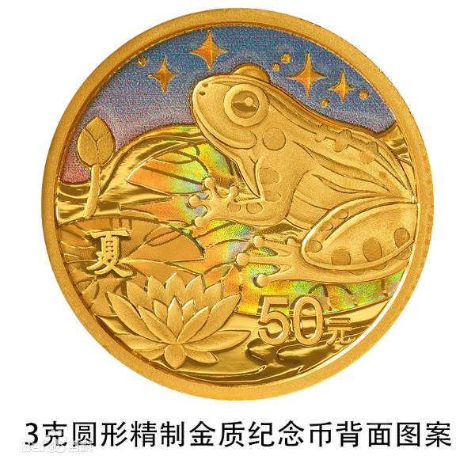
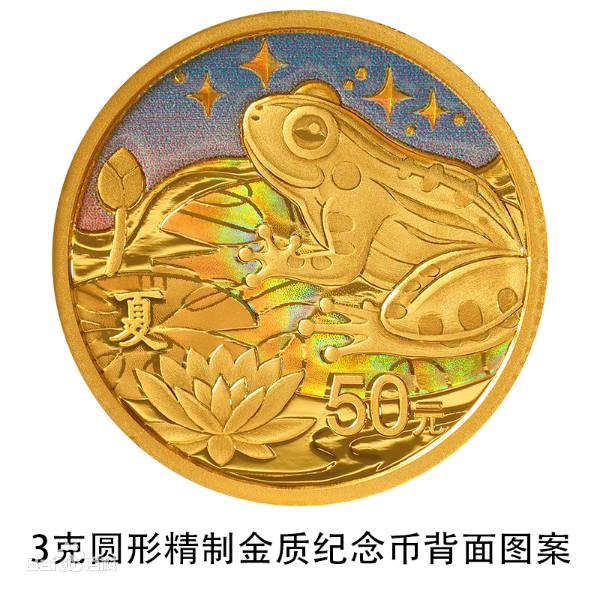

金银纪念币是中国人民银行定于2022年8月7日发行的金银纪念币。该套金 银纪念币共28枚，其中金质纪念币4枚，银质纪念币24枚，均为中华人民共和国 法定货币。
金银纪念币正面图案均为装饰圭表造型，衬以桃花、麦穗、稻穗、梅花等组 合设计，并刊国名、年号；纪念币背面图案以各种动植物为主要设计元素，展现 相应时节时节物候现象，并刊相应节气字样及面额。
金银纪念币分别由沈阳造币有限公司和深圳国宝造币有限公司铸造，中国金 币集团有限公司总经销。
金银纪念币是中国人民银行定于2022年8月7日发行的金银纪念币。该套金 银纪念币共28枚，其中金质纪念币4枚，银质纪念币24枚，均为中华人民共和国 法定货币。
金银纪念币正面图案均为装饰圭表造型，衬以桃花、麦穗、稻穗、梅花等组 合设计，并刊国名、年号；纪念币背面图案以各种动植物为主要设计元素，展现 相应时节时节物候现象，并刊相应节气字样及面额。
金银纪念币分别由沈阳造币有限公司和深圳国宝造币有限公司铸造，中国金 币集团有限公司总经销。
二十四节气是古人在长期的生产实践中逐步认识到季节更替和气候变 化的规律，把一年分为立春、雨水、惊蛰、春分等二十四个节气。二十四 节气用以反映四季、气温、降雨、物候等方面的变化，这是我国古代劳动 人民掌握农事季节的经验总结，是中国传统历法体系及其相关实践活动的 重要组成部分。
二十四节气于2016年被联合国评为人类非物质文化遗产代表作，被誉 为“中国的第五大发明”，是中国目前最有影响力的非物质文化遗产之一。 作为我国古代劳动人民对时令等变化规律所独创的知识体系，中国人民银 行发行二十四节气（光阴的故事）金银纪念币，彰显了中华民族的历史文 化、时空智慧与生态观念。“光阴的故事”主题讲述的是一个人们如何与 时光相处的故事，展现华夏源远流长的节气文化和精神气节。
 



“二十四节气列入‘非遗’，有利于提升这些节气的知名度、保护其文化内蕴。对二十四节气及其蕴含的优秀文化，如效法自然、顺应自然、利用自然的观念，天人合一的智慧，及中国百乃至上千年的一些民俗文化事项，积极挖掘符合时代的内容，使其随时代而行，与时代同频人对宇宙、自然的独特认识，要进行认真研究、探讨，以期有助于当今社会；对延续、传承几共振。
2006年5月20日，“二十四节气”作为民俗项目经国务院批准列入第一批国家级非物质文化遗产名录。2016年11月30日，中国“二十四节气”被正式列入联合国教育、科学及文化组织人类非物质文化遗产代表作名录。
2017年5月5日，“二十四节气”保护联盟在浙江杭州拱墅区成立。2019年7月，由中国气象局华风气象传媒集团与中国气象局气象宣传与科普中心联合主办的“中国天气·二十四节气研究院”正式成立。